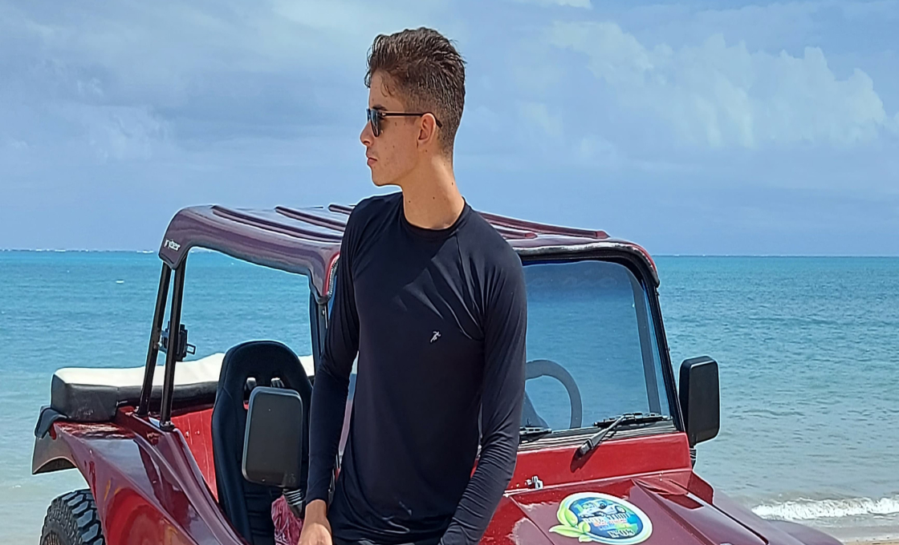
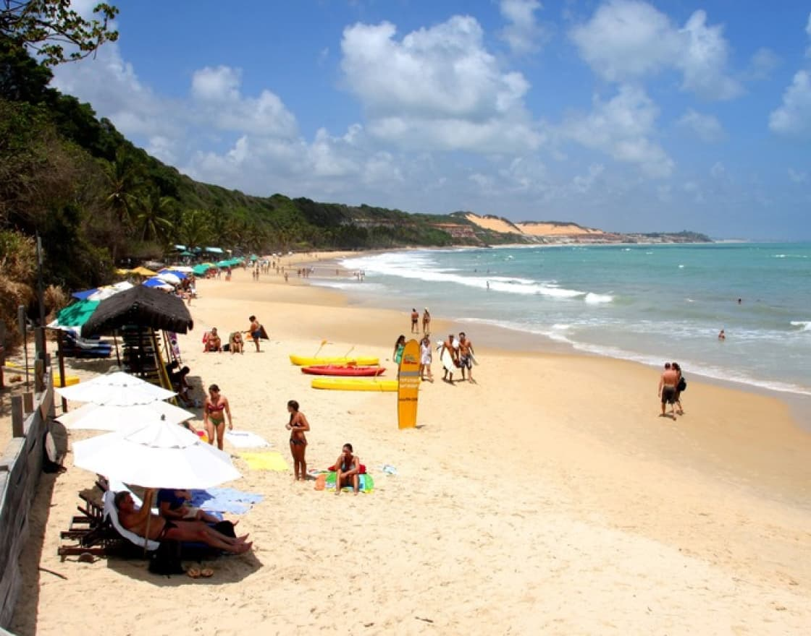

R$ 280
Porto de Galinhas.


A Praia de Porto de Galinhas, em Pernambuco, é um verdadeiro paraíso tropical com águas cristalinas e piscinas naturais formadas por corais.
Informações
-

Passeio de Jangada às Piscinas Naturais
aça um passeio de jangada até as famosas piscinas naturais de Porto de Galinhas. Lá, você poderá mergulhar com snorkel para observar a rica vida marinha, incluindo peixes coloridos e corais.
-
Mergulho com Cilindro (Scuba Diving)
Porto de Galinhas oferece opções de mergulho com cilindro, que proporcionam uma experiência ainda mais intensa de exploração do mundo subaquático.
-
Passeio de Buggy
Essa é uma ótima maneira de conhecer as praias próximas, como Maracaípe e Muro Alto, e apreciar paisagens deslumbrantes.
-

Prática de Stand Up Paddle
As águas calmas de Porto de Galinhas são perfeitas para a prática de stand up paddle. Alugue uma prancha e reme pelas águas serenas, apreciando as vistas panorâmicas da praia e seus arredores.